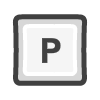

Controles
Iniciar:
Clique
 na imagem do sólido para iniciar.
na imagem do sólido para iniciar.
na imagem do sólido para iniciar.

Rotacionar:
Clique e arraste
para rotacioanar o sólio.
para rotacioanar o sólio.

Zoom:
Rode a
 para aproximar e afastar.
para aproximar e afastar.
para aproximar e afastar.

Abrir:
Segure
para "abrir" o sólido.

Fechar:
Segure

para "fechar" o sólido.

Faces:
Precione
para ocultar ou mostrar as faces.

Eixos:
Precione
 para mostrar ou ocultar os eixos.
para mostrar ou ocultar os eixos.
para mostrar ou ocultar os eixos.

P.S:
Existem mais funcionalidades que não foram faladas aqui, talvez algum dia escreva sobre elas, mas nesse meio tempo gostaria contar com seu sentimento de exploração e descoberta.
P.P.S: Na duvida aperte  e ou reinicie a página.
e ou reinicie a página.